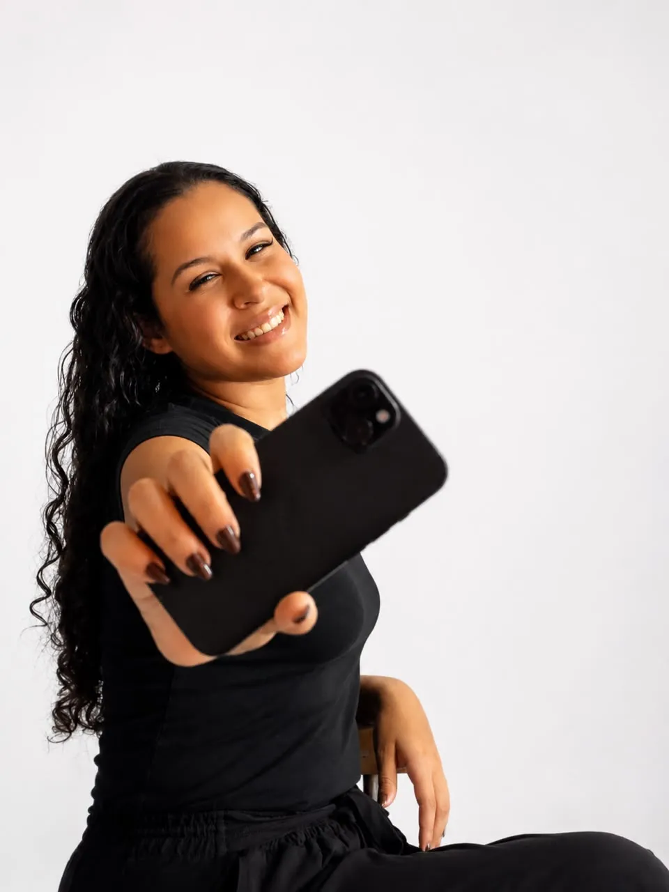
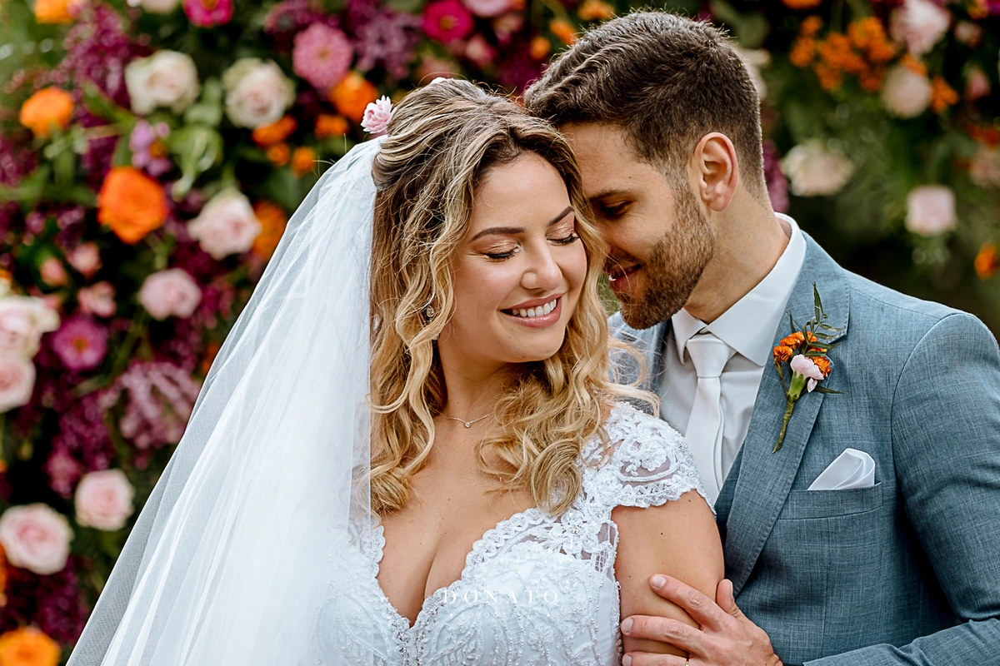
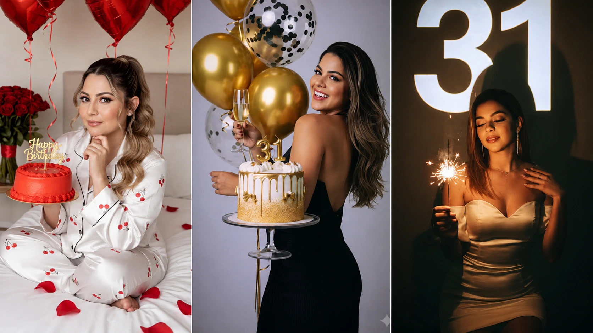
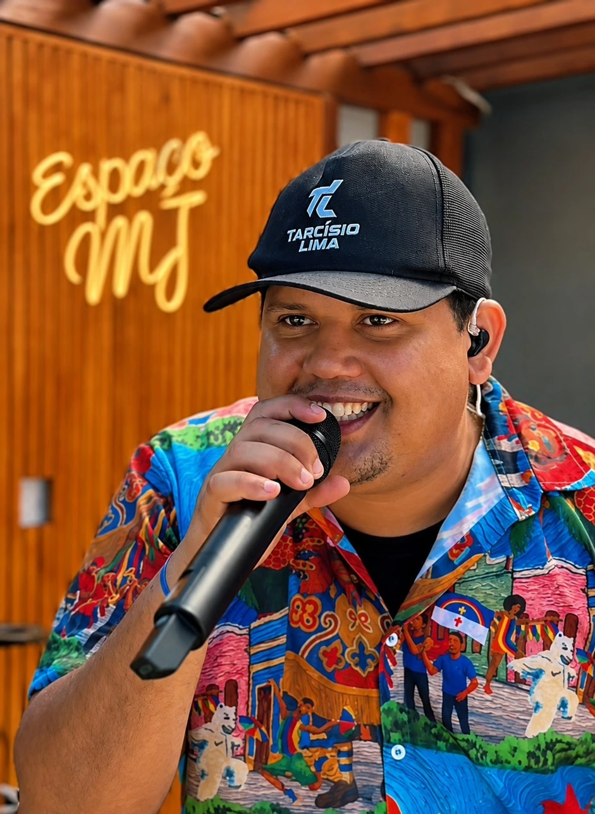

Vídeos, Reels e Art Movies autorais com sensibilidade, elegância e compromisso com a sua história.

Sou Alice, storymaker apaixonada por capturar a verdade de cada momento. Acredito que o vídeo vai além do registro — ele traduz emoções, preserva memórias e conecta pessoas ao que há de mais genuíno em suas vidas.
Com um olhar atento aos detalhes e uma abordagem discreta, busco criar imagens que falem por si. Imagens que façam você reviver cada sorriso, cada abraço, cada instante que merecia ser eternizado.
Meu compromisso é oferecer uma experiência completa: desde o primeiro contato até a entrega final, tudo é pensado para que você se sinta acolhido, confiante e encantado com o resultado.



Cada cliente é único. Escuto, entendo e personalizo cada projeto para que o resultado supere expectativas.
Não registro apenas vídeos e fotos — componho imagens com intenção, sensibilidade e uma estética que transcende o comum.
Cada vídeo passa por uma edição e colorização minuciosa, garantindo um resultado de altíssima qualidade cinematográfica.
Utilizo equipamentos de ponta para garantir nitidez, movimento suave e iluminação impecável em qualquer cenário.
Pontualidade, transparência e dedicação total. Do primeiro contato à entrega, você pode confiar.
Conversamos sobre a sua ideia, o evento e o que você espera. Tudo começa com uma boa conversa.
Definimos locações, horários, estilos e detalhes para que nada fique de fora.
Registro cada momento com discrição e atenção, capturando a verdade dos instantes.
Cada take é tratado e montado cuidadosamente, respeitando a atmosfera original com um toque cinematográfico e artístico.
Você recebe suas imagens em alta resolução, prontas para emocionar por gerações.
Alice conseguiu capturar exatamente o que sentimos naquele dia. Os vídeos são tão emocionantes quanto o próprio momento.
Profissional incrível. Discreta, atenciosa e com um olhar único. O resultado superou todas as nossas expectativas.
As fotos do meu ensaio ficaram maravilhosas. Me senti confortável durante toda a sessão. Recomendo de olhos fechados.
Tudo começa com uma conversa para entender a sua necessidade. Após alinharmos os detalhes, envio uma proposta personalizada. Com a aprovação e o sinal, garantimos a data e começamos o planejamento juntos.
O prazo varia de acordo com o tipo de trabalho. Ensaios são entregues em até 15 dias úteis. Casamentos e eventos maiores, em até 30 dias úteis. Priorizo qualidade em cada imagem.
Sim! Atendo em diversas localidades. Para eventos fora da minha região, é aplicada apenas uma taxa de deslocamento que combinaremos previamente.
Sim, todas passam por um tratamento profissional de cor, luz e enquadramento. As mídias selecionadas recebem edição artística avançada, mantendo a naturalidade e a atmosfera do momento.
Aceito Pix, transferência bancária e cartão de crédito (com possibilidade de parcelamento). Trabalhamos com condições flexíveis para cada tipo de projeto.
Preencha o formulário ao lado e entrarei em contato o mais breve possível. Ou se preferir, fale diretamente comigo pelo WhatsApp.